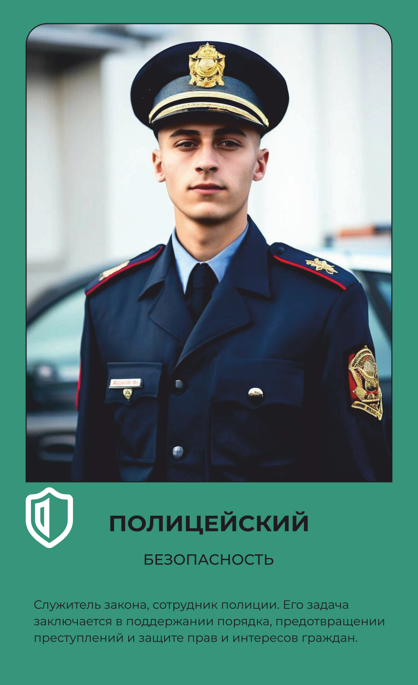

Полицейский
Охраняет порядок и помогает людям.
Основной вид деятельности
Поддерживает порядок, предотвращает преступления и защищает права и интересы граждан.
Что делает на рабочем месте
Полицейский патрулирует закреплённую территорию, обращая внимание на подозрительную активность, и реагирует на происшествия — от бытового конфликта до серьёзного преступления, — чтобы обеспечить безопасность людей и их имущества. При получении вызова наряд полицейских быстро прибывает на место, оценивает ситуацию и принимает меры для её урегулирования — от разговора с участниками конфликта до задержания правонарушителя. Участвует в первичном расследовании происшествий — собирает доказательства, фиксирует показания свидетелей, составляет протоколы и передаёт материалы следователям для дальнейшей работы. Оказывает помощь гражданам в трудной ситуации — направляет их в нужные службы, при необходимости оказывает первую медицинскую помощь, консультирует по вопросам личной безопасности. При необходимости применяет спецсредства — от резиновой палки до электрошокового устройства, — но только в случаях, предусмотренных законом. Носит форму тёмно-синего цвета с жетоном и погонами, а обувь — берцы или ботинки с закрытым носком, потому что смена нередко проходит на ногах и в любую погоду.
Что производит
Обеспечение общественной безопасности: Полицейский отвечает за предотвращение преступлений и поддержание общественного порядка. Он патрулирует улицы, обращает внимание на подозрительную активность и реагирует на происшествия, чтобы защитить жизни и собственность граждан. Реагирование на происшествия.Полицейский в составе наряда полиции быстро прибывает на место происшествия, оценивает ситуацию и предпринимает соответствующие меры для обеспечения безопасности и урегулирования ситуации. Участие в проведении расследований: Рядовой полицейский может быть назначен для проведения начального расследования или помощи в расследовании следователям.. Он собирает доказательства, фиксирует показания свидетелей, составляет отчеты и сотрудничает с другими правоохранительными органами для выяснения обстоятельств преступления. Оказание помощи и консультаций: Полицейские также оказывают помощь и консультации гражданам. Они могут помочь людям в беде, направить на нужные службы или оказать первую медицинскую помощь. Кроме того, они делятся информацией о безопасности, предоставляют советы по профилактике преступлений и просвещают общественность о правилах и законах.
Оборудование и инструменты
Спецодежда и СИЗ
одежды
Форма темно-синего цвета, брюки, рубашка, блуза светло-голубая, китель, фуражка, жетон с идентификационным номером полицейского, погоны, платье, эмблема петличная, пилотка
Спецобувь
обуви
Ботинки, туфли с закрытым носком, берцы
Где учиться
40.02.02 Правоохранительная деятельность
Где работать
Похожие профессии
Данные — карточка 133 из 160, отрасль «Безопасность». Зарплата — оценочная вилка по региону.